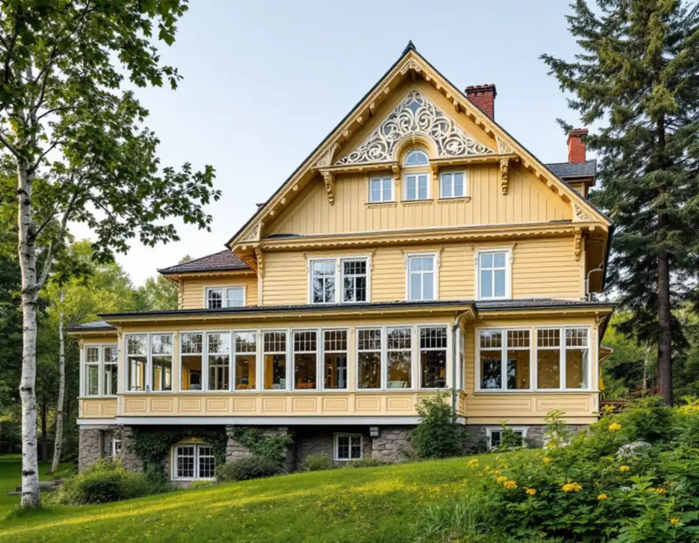
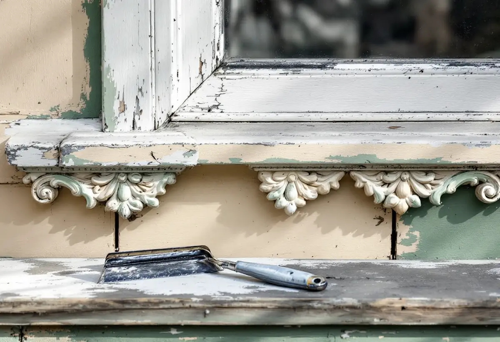

Färgprov
Vi skrapar fram lagren på några ställen för att se vilka färgtyper som finns.
Den som ska måla om en äldre trävilla i Mälarhöjden hittar ofta flera generationer färg på samma vägg. Geal Entreprenad AB målar fasader i Hägersten och börjar med att ta reda på vilka lager som sitter där, eftersom det avgör hur den gamla färgen ska bort och vad som kan strykas ovanpå.

I stadens vägledning om småhusområden räknas Mälarhöjden till villastäderna, som växte fram efter privata initiativ och större markköp. Eftersom de var privat organiserade blev bebyggelsen brokigare än i stadens egna egnahemsområden, med individuellt utformade hus. Trä var det dominerande fasadmaterialet, även om puts förekom, och glasverandor, takkupor, snickarglädje och färgsättning gav områdena den variation som syns än i dag.
Tabellen i vägledningen markerar Mälarhöjden som kulturhistoriskt värdefull miljö med äldre planer som ger generösa byggrätter. Vägledningen beskriver hur tomter i villastäderna har delats och nya hus byggts på tomter kring 600 kvadratmeter. På samma gata kan alltså en villa med glasveranda ligga bredvid ett nytt hus. Den äldre villans färg ska följa det som huset självt är målat med, inte grannens fasad.

Länsstyrelsernas informationsblad om målning utomhus på trä skriver att det är nödvändigt att veta vilka färgtyper huset har målats med tidigare. Det kan vara linoljefärg, alkydoljefärg eller plastfärg i olika lager. En fasad med plastfärg eller alkydoljefärg avslöjar sig ofta genom flagor, sprickor eller blåsor, och bladet råder att ta hjälp av en fackman för att avgöra vilken färg det är.
Boverket beskriver hur träpaneler började målas med tät plastfärg när en ny produkt kom ut på marknaden. Akrylatfärg kräver en grundfärg av alkydolja, men den grunden hoppades ibland över. Följden blev att panelen fuktades upp kraftigt av regn, med fuktskador som resultat. Släpper färgen i stora flak på en villa som har målats om under senare decennier kan det vara förklaringen, och då hjälper det inte att bara stryka ett nytt lager ovanpå.
En linoljemålad fasad tvättas och lös färg skrapas bort innan den målas om. Enligt bladet kan all gammal färg behöva bort om det sitter många tjocka, krackelerade lager, men partier där färgen sitter bra kan gärna sparas. Slipning ska ske sparsamt och med skyddsmask. Blästring och maskinslipning skadar träet, och högtryckstvätt pressar in vatten i väggen, så ingen av metoderna passar på en gammal trävilla.
Plastfärg förenas inte med underlaget utan bildar en hinna som måste bort innan linoljefärg kan användas. Bladet föreslår handskrapning med vass skrapa i första hand. Sitter plastfärgen ovanpå äldre linoljefärg kan infravärme mjuka upp oljefärgen så att plastlagret går att skrapa loss, men metoden är förenad med viss brandrisk. Kemiska färgborttagningsmedel bör undvikas eftersom de lätt skadar träet. På verandor och utsågade detaljer är det därför handarbete som gäller.
Sedan lagändringen krävs enligt Boverket inget bygglov för kulörbyte på ett en- eller tvåbostadshus, utom där utökad lovplikt gäller. Stockholms stad skriver att det gäller i särskilt kulturhistoriskt värdefulla byggnader och områden, och hänvisar till Stadsmuseets klassificeringskarta som en första indikation. Eftersom Mälarhöjden är utpekat i vägledningen är kartan första steget innan en ny kulör väljs.
Äldre ritningar och handlingar för din fastighet kan du själv hämta i stadens e-tjänst Bygg- och plantjänsten, och äldre miljöprogram och typritningssamlingar går att beställa från staden. De har ingen juridisk status men visar hur området var tänkt. När den gamla färgen är borta sodatvättar vi enligt Riksantikvarieämbetets handbok, slår i spikar med dorn och grundar tunt med linoljefärg. Om invändig målning och lägenheterna i stadsdelen kan du läsa under målare i Hägersten, om panel på småstugorna under fasadrenovering i Hägersten och om målning i stort under målare.
Vi skrapar fram lagren på några ställen för att se vilka färgtyper som finns.
Vi kontrollerar Stadsmuseets klassificering innan kulören bestäms.
Färgborttagning, lagning, färgtyp och ROT-avdrag redovisas var för sig.
Lös färg och plastfärg tas bort för hand, med infravärme där det behövs.
Sodatvätt, islagning av spikar och tunn grundstrykning.
Mellan- och slutstrykning, sedan en gemensam genomgång.
Att måla eller rengöra fasaden på ett småhus ger rotavdrag enligt Skatteverket, och det gör även uppsättning och nedmontering av ställningen. Gäller det fasaden på ett hus i en bostadsrättsförening ger arbetet inget avdrag.
Avdraget är 30 procent av arbetskostnaden, högst 50 000 kr per person och år och högst 75 000 kr tillsammans med rutavdrag. Färg, material och resor ger inget avdrag. Vi gör avdraget direkt på fakturan.
Hur många färglager som måste bort, hur mycket snickarglädje och veranda som ska målas för hand och vilken färgtyp som passar styr mest. Efter ett gratis platsbesök får du ett skriftligt kostnadsförslag.
Fasad, fönster och invändig målning.
Målare i Stockholm →Takbyte, takbesiktning och plåtarbeten.
Takläggare i Hägersten →Bostadsrätten, golvbrunnen och fallet.
Badrumsrenovering i Hägersten →Kuperad tomt, stödmur och dränering.
Byggföretag i Hägersten →Småstugor, typritningar och panel.
Fasadrenovering i Hägersten →Villorna, kartan och spröjsen.
Fönsterbyte i Hägersten →Fönster från olika epoker.
Fönsterrenovering i Hägersten →Golv i källare och suterrängvåning.
Golvläggare i Hägersten →Slipa och spara parketten i en äldre lägenhet.
Golvslipning i Hägersten →Efterkrigstidens lägenheter och asbestprov.
Köksrenovering i Hägersten →Lägenheter, villor vid Mälaren och radhus.
Målare i Hägersten →Låglutande tak och takavvattning i Hägersten.
Plåtslagare i Hägersten →Verandor, dörrar och snickeridetaljer på villan.
Snickare i Hägersten →Samma material eller ett nytt.
Takbyte i Hägersten →Villastad, radhuslänga och brandskydd.
Tillbyggnad i Hägersten →